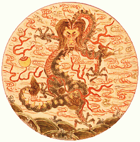
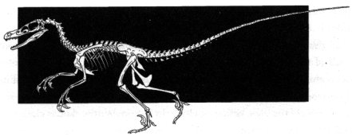

Dragón Chino
La figura del dragón tiene una gran importancia en China, desde donde se extendió a otros países del Lejano Oriente. Esto es algo muy sugestivo, ya que es en el norte de ese país en donde se localiza uno de los yacimientos de dinosaurios más ricos del mundo, el extenso Desierto de Gobi, el cual ocupa también una gran parte de Mongolia. El Gobi a brindado a la ciencia durante el siglo XX muchos restos de dinosaurios del período Cretácico (entre 144 y 65 millones de años antes del presente), tales como Velociraptor, Protoceratops, Tarbosaurus, Gallimimus, Oviraptor y otros. Pero los restos de estos animales han estado ahí desde muchísimo antes que el primer paleontólogo los encontrase, y no hay motivo para pensar que antes de su descubrimiento por la ciencia no hallan sido observados ocasionalmente por habitantes de la región.
Un rasgo interesante del dragón oriental es su aspecto serpentiforme. Esto puede haber sido sugerido por la observación de las columnas vertebrales de los dinosaurios. Como dijimos anteriormente, es muy raro encontrar esqueletos fósiles completos. Cuando un animal muere, sus restos se ven sometidos a una serie de procesos que afectarán la manera en que este se pueda fosilizar -si es que lo hace-, tales como lluvia, viento, y la acción de otros animales. El resultado de esto es que sus huesos se separen y sólo algunas partes lleguen hasta nosotros. A diferencia de otras partes del esqueleto, como el cráneo y las extremidades, la columna vertebral permanece unida por más tiempo, por lo que es más común encontrar sólo la columna vertebral de un animal que encontrarlo completo. Así, los dragones se muestran generalmente con aspecto de serpiente.
En la China actual y desde tiempos remotos se utilizan con mil y un alegados fines medicinales los huesos de dragón y dientes de dragón, tal es el significado de las voces longgu y longchi respectivamente.

Velociraptor, dinosaurio depredador cuyos restos son normalmente encontrados en el desierto de Gobi, en Mongolia y China.
Aunque los longgu y longchi no son en realidad restos de dinosaurios -son fósiles de antiguos rinocerontes cenozoicos-, éstos muestran la firme la relación entre fósiles y dragones en China.
Hasta un niño puede notar la semejanza entre los dragones y los dinosaurios, y talvez éste sea el motivo de la popularidad de estos últimos entre los niños.
Volver a Dragones y dinosaurios
Volver a la sección Escepticismo
Comentarios
Comments powered by Disqus